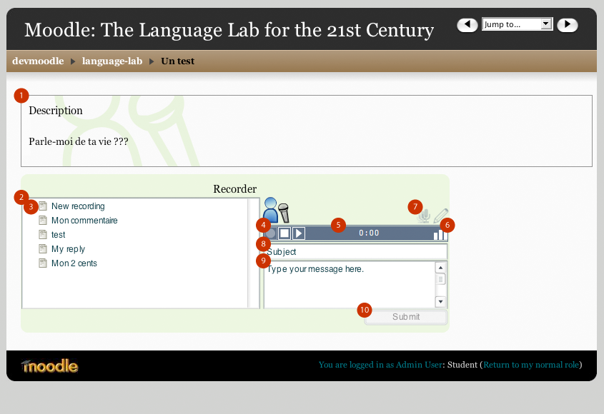
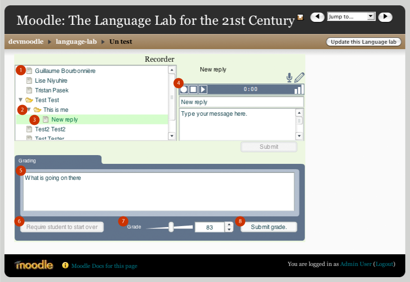

Language lab
Student view

- Description: This is where the question or exercise is described.
All forms of media can be added in the description. Images,
videos, audio.
- The recorder applet in which students record themselves. Note
that the recorder is a flash applet. You will need to allow use of this
applet on your system. You may also need to setup your microphone.
- Student recording pane: displays the students recordings.
The student can also add new recordings by pressing on New
recording. If the activity allows one recording only, New recording
will only show up when the student starts the activity. Once the
student has recorded, he/she will longer be able to add new
recordings.
- Transport : Record, stop and play buttons. In order for the
students to record themselves, they must press the red record button.
Pressing stop will stop the recording and launch the play back of the
recording. Note: It is not possible to pause a recording.
- Time display. In recording mode, displays the amount of time
left for recording. In playback mode, displays the time from the
beginning.
- Status bars. These bars indicate the connection status to the
red5 server. No connection to the red5 server is established if only
one bar displays. Recording and playback will not be available.
- Microphone symbols: The microphone symbols indicate whether the
activity allows multiple recordings or a single recording .
- Subject : The student can give a title to the recording. Useful
when using multiple recordings to identify each recording.
- Message box: In this field, the student can leave a written
message for the teacher about the recording.
- Submit button : Once the recording is finish and all fields have
been filed with the appropriate information, the student must
press the submit button for the recording activity to saved. If
submit is not pressed, all work will be lost.
Teacher view

- Recording pane: Displays all students within the course and the
recordings that they have submitted. A sheet beside the name means that
the student has not done any audio recordings
- Folder view : The folder under the student name is the actual
audio recording. Clicking on the folder, in this example "This is me"
will play the sound and also display the subject and notes that the
student left for that recording.
- New Reply : By pressing New Reply, the teacher can record an
audio message and leave written notes in the New reply filed and
message field that the student can refer too.
- Transport